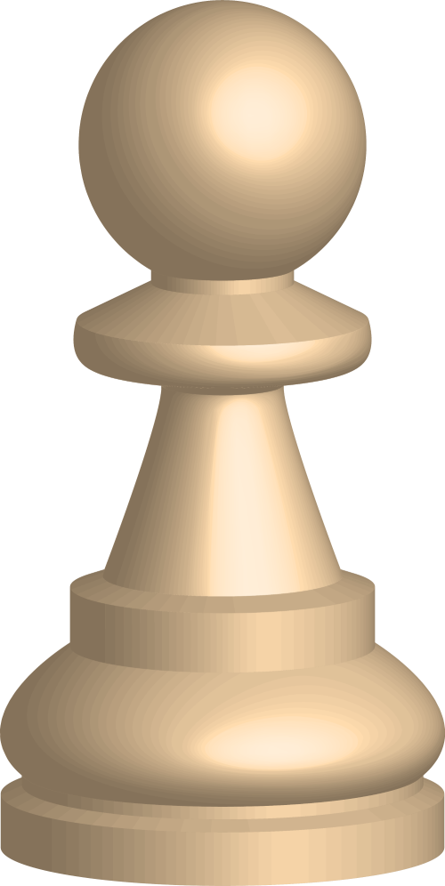
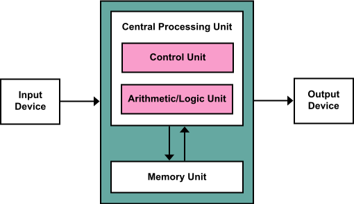
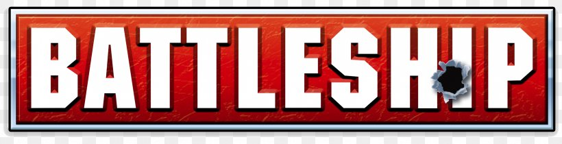

Chess Game
Fall 2024
With a team of 4 other classmates, I created a python program with an assigned team that implements a chess game with move validation and visuals using a waterfall development process. Focusing on a bottom up approach allowed us to better split up and manage the workload.
learn the rules ->
Hack Computer
Summer 2025
During my Computer Organizations class, I designed a HACK computer using HDL. Starting from a simple Nand gate, I built all the rest of the gates, logic units, and memory from the ground up, each time, building off of what I made the previous iteration.

Battleship AI
Spring 2025
Using Java, I wrote an algorithm that uses density maps and search and destroy subalgorithms. By doing so, the algorithm was able to determine the statistically optimal place to shoot the torpedos given a specific game state. On top of that, I created a rough outline of the game, that this algorithm could be used in.
learn about battleship ->